IRS fora da rotina
A declaração inclui novos rendimentos, mudanças no agregado, dúvidas nos anexos ou outros elementos que precisam de ser confirmados.
03 · Para quem · Particulares
A Clave de Números acompanha particulares em declarações de IRS e situações fiscais que exigem análise adicional, como rendimentos prediais, mais-valias, rendimentos obtidos no estrangeiro, heranças, alterações relevantes no agregado e organização documental do património.

Esta página dirige-se sobretudo a declarações e decisões que incluem rendimentos, património ou alterações que não se enquadram numa situação fiscal simples e repetitiva.
A declaração inclui novos rendimentos, mudanças no agregado, dúvidas nos anexos ou outros elementos que precisam de ser confirmados.
Rendas, recibos eletrónicos, despesas documentadas e opções de tributação devem ser organizadas e analisadas.
A mais-valia, as despesas associadas e um eventual reinvestimento devem ser preparados antes da entrega da declaração.
Pensões, salários, investimentos ou outros rendimentos obtidos fora de Portugal exigem enquadramento e documentação adequados.
Estas situações podem envolver documentação patrimonial, alterações de titularidade e obrigações declarativas específicas.
Contratos, documentos de imóveis e outros elementos dispersos podem ser reunidos para facilitar o acompanhamento das obrigações associadas.
Organização dos elementos da declaração e análise das situações que exigem maior atenção.
Ver ficha 02Consultoria fiscalAnálise prévia de decisões com impacto fiscal, como vender, arrendar, doar ou reorganizar património.
Ver ficha 03Gestão administrativa de bens e patrimónioOrganização documental e acompanhamento administrativo das obrigações relacionadas com determinados bens.
Ver fichaO acompanhamento pode ser útil quando a declaração inclui rendimentos prediais, mais-valias, rendimentos obtidos no estrangeiro, alterações relevantes no agregado, heranças ou outras situações que exigem análise e documentação adicional.
As rendas são rendimentos prediais e devem ser incluídas na declaração de IRS. A documentação, as despesas elegíveis e as opções de tributação devem ser analisadas de acordo com a situação concreta.
A mais-valia é apurada a partir do valor de venda, do valor de aquisição corrigido e das despesas documentadas. As condições de reinvestimento ou outras situações relevantes devem ser analisadas antes da entrega da declaração.
Exponha o seu caso de forma breve. A equipa indicará se a situação se enquadra nos serviços prestados e que informação será necessária.
Expor a minha situação